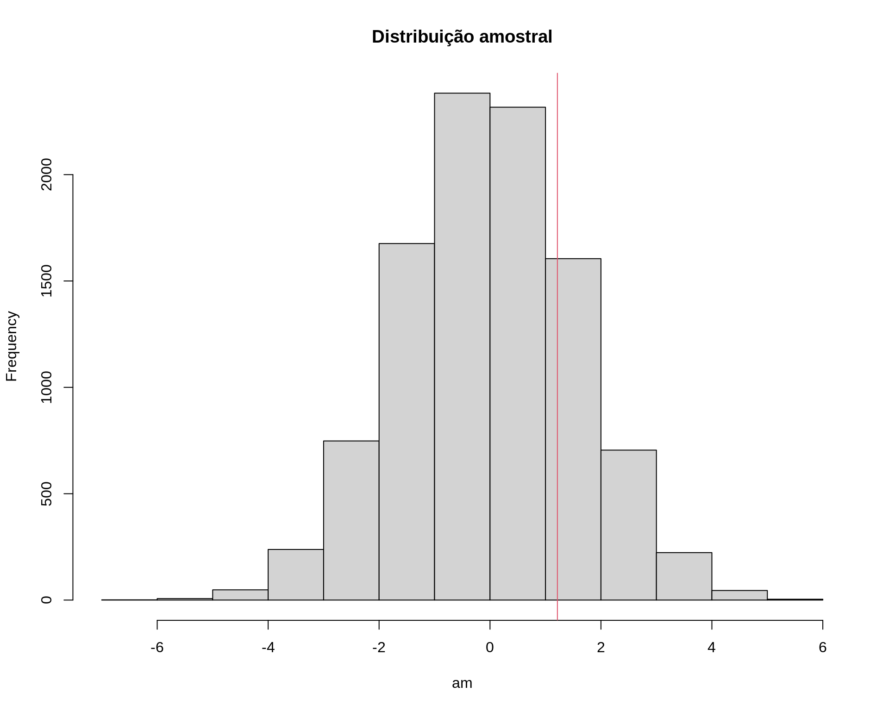
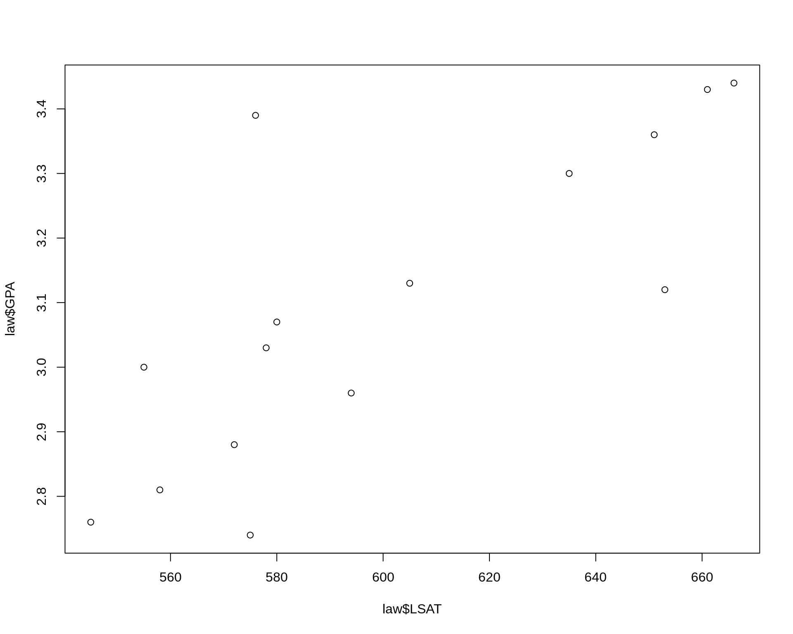

Métodos de reamostragem
Bootstrap (não paramétrico)
Fernando P. Mayer
1 Introdução
Os métodos de Bootstrap são uma classe de métodos de Monte Carlo não paramétricos, que estimam a distribuição de uma população por reamostragem
- Métodos de reamostragem tratam a amostra observada como uma população finita
- A distribuição da população finita representada pela amostra observada, pode ser pode ser entendida como uma pseudo-população, com características similares às da população original
- Amostra aleatórias são geradas (reamostragem) a partir da amostra original, para estimar características populacionais e fazer inferência sobre a população amostrada
- Através da reamostragem, a distribuição amostral de uma estatística pode ser estimada, e as propriedades de um estimador podem então ser calculadas através do erro padrão e cálculos de viés
Métodos de bootstrap são utilizados quando a distribuição da população alvo não é especificada (ou conhecida), e a amsotra é a única informação disponível
Justificativas
- Métodos computacionalmente intensivos para inferência estatística são usados quando as abordagens tradicionais não são adequadas.
- Resultados assintóticos em pequenas amostras.
- Violação de pressupostos.
- Não existência de mecanísmos de inferência específicos.
- Tais métodos se baseiam em reamostragem e/ou simulação.
- Podem ser aplicados em muitos contextos.
Bootstrap: visão geral
- Boostrap foi apresentado de forma sistematizada por Efron (1979).
- O termo bootstrap foi usado por Efron (1979) com o mesmo espírito que Tukey (1958) usou Jackknife (canivete suiço)
- O método já havia sido usado em circustâncias anteriores.
- Bootstrap é um método de reamostragem que pode usado para avaliar propriedades de estimadores e fazer inferência.
- Bootstrap é um método de Monte Carlo pois usa a distribuição empírica dos dados como se fosse a verdadeira distribuição.
- Principais aplicações de bootstrap:
- Avaliar propriedades da distribuição de estimadores para seleção, ajuste de vício, etc.
- Substituir ou aprimorar a adequação de abordagens assintóticas em amostras pequenas: intervalos de confiança, testes de hipótese.
Funcionamento
- Considere uma amostra de observações iid \(x_i\), \(i = 1, \ldots, n\)
- Usando a distribuição empírica, cada valor \(x_i\) tem igual probabilidade \(1/n\) de ocorrer.
- Considere que \(\theta\) seja um parâmetro de interesse que dispõe de um estimador \(\hat{\theta} = f(X_1, ..., X_n)\).
- Uma amostra bootstrap é um conjunto de valores extraídos ao acaso com reposição da amostra original.
- A estimativa de \(\theta\) na \(b\)-ésima reamostra bootstrap é \(\hat{\theta}^{b}\).
Algoritmo
Para cada estimativa de bootstrap indexada \(b = 1, \ldots, B\):
- Gere uma amostra \(x^{\star} = (x_1^{\star}, \ldots, x_n^{\star})\), através de amostragem com reposição de amostra observada \(x_1, \ldots, x_n\)
- Calcule a \(b\)-ésima estimativa \(\hat{\theta}^{(b)}\) da \(b\)-ésima amostra de bootstrap
A estimativa pontual bootstrap é o valor médio \[ \overline{\hat{\theta}^\star} = \frac{1}{B} \sum_{b = 1}^{B} \hat{\theta}^{(b)} \]
Exemplo da aula anterior
## Exemplo adaptado de Manly (1997)
## Comparação do comprimento da mandíbula de chacais machos e fêmeas
set.seed(2)
machos <- c(120, 107, 110, 116, 114, 111, 113, 117, 114, 112)
## Simula diferença para as femeas
femeas <- rnorm(10, mean(machos) - 2, sd = sd(machos))
da <- data.frame(comp = c(machos, femeas),
sexo = c(rep("M", 10), rep("F", 10)))
densityplot(~comp, groups = sexo, data = da, auto.key = TRUE)
## Média por sexo
tapply(da$comp, da$sexo, mean)
# F M
# 112.185 113.400
## Diferença das médias
diff(tapply(da$comp, da$sexo, mean))
# M
# 1.214975
## Média de cada sexo
(m1 <- mean(machos))
# [1] 113.4
(m2 <- mean(femeas))
# [1] 112.185
## Diferença entre as médias amostrais
(med.amostral <- m1 - m2)
# [1] 1.214975
## Calcula o desvio padrão ponderado
n1 <- length(machos)
v1 <- var(machos)
n2 <- length(femeas)
v2 <- var(femeas)
(s.pond <- sqrt(((n1 - 1) * v1 + (n2 - 1) * v2)/(n1 + n2 - 2)))
# [1] 3.690024
## Teste de hipótese para
## H0: mu1 <= mu2
## Ha: mu1 > mu2
mu0 <- 0
t.test(x = machos, y = femeas, alternative = "greater",
var.equal = TRUE, mu = mu0)
#
# Two Sample t-test
#
# data: machos and femeas
# t = 0.73625, df = 18, p-value = 0.2355
# alternative hypothesis: true difference in means is greater than 0
# 95 percent confidence interval:
# -1.646627 Inf
# sample estimates:
# mean of x mean of y
# 113.400 112.185
## Estatística de teste
(tcalc <- (m1 - m2)/(s.pond * sqrt(1/n1 + 1/n2)))
# [1] 0.7362465
## Valor crítico
(tcrit <- qt(.025, df = n1 + n2 - 2, lower.tail = FALSE))
# [1] 2.100922
## p-valor
pt(tcalc, df = n1 + n2 - 2, lower.tail = FALSE)
# [1] 0.2355338
## Teste por simulação via Bootstrap
N <- 10000
## Se a hipótese nula é verdadeira, então o comprimento das mandíbulas
## de machos e fêmeas são provenientes da mesma poplação, e portanto
## podem ser pensados como uma única amostra.
amostra <- c(machos, femeas)
## Amostra COM REPOSIÇÃO os 20 valores, e atribui aleatoriamente 10 para
## cada grupo (macho ou fêmea). Se forem de fato da mesma população,
## então as diferenças entre as médias devem ser próximas de zero.
am <- replicate(
N, diff(tapply(sample(amostra, replace = TRUE), da$sexo, mean))
)
## Visualização
hist(am, main = "Distribuição amostral")
abline(v = med.amostral, col = 2)
## Exemplo adaptado de Manly (1997)
## Comparação do comprimento da mandíbula de chacais machos e fêmeas
machos <- c(120, 107, 110, 116, 114, 111, 113, 117, 114, 112)
femeas <- c(110, 111, 107, 108, 110, 105, 107, 106, 111, 111)
da <- data.frame(comp = c(machos, femeas),
sexo = c(rep("M", 10), rep("F", 10)))
densityplot(~comp, groups = sexo, data = da, auto.key = TRUE)
## Média por sexo
tapply(da$comp, da$sexo, mean)
# F M
# 108.6 113.4
## Diferença das médias
diff(tapply(da$comp, da$sexo, mean))
# M
# 4.8
## Média de cada sexo
(m1 <- mean(machos))
# [1] 113.4
(m2 <- mean(femeas))
# [1] 108.6
## Diferença entre as médias amostrais
(med.amostral <- m1 - m2)
# [1] 4.8
## Calcula o desvio padrão ponderado
n1 <- length(machos)
v1 <- var(machos)
n2 <- length(femeas)
v2 <- var(femeas)
(s.pond <- sqrt(((n1 - 1) * v1 + (n2 - 1) * v2)/(n1 + n2 - 2)))
# [1] 3.080404
## Teste de hipótese para
## H0: mu1 <= mu2
## Ha: mu1 > mu2
mu0 <- 0
t.test(x = machos, y = femeas, alternative = "greater",
var.equal = TRUE, mu = mu0)
#
# Two Sample t-test
#
# data: machos and femeas
# t = 3.4843, df = 18, p-value = 0.001324
# alternative hypothesis: true difference in means is greater than 0
# 95 percent confidence interval:
# 2.411156 Inf
# sample estimates:
# mean of x mean of y
# 113.4 108.6
## Estatística de teste
(tcalc <- (m1 - m2)/(s.pond * sqrt(1/n1 + 1/n2)))
# [1] 3.484324
## Valor crítico
(tcrit <- qt(.025, df = n1 + n2 - 2, lower.tail = FALSE))
# [1] 2.100922
## p-valor
pt(tcalc, df = n1 + n2 - 2, lower.tail = FALSE)
# [1] 0.001323634
## Teste por simulação via Bootstrap
N <- 10000
## Se a hipótese nula é verdadeira, então o comprimento das mandíbulas
## de machos e fêmeas são provenientes da mesma poplação, e portanto
## podem ser pensados como uma única amostra.
amostra <- c(machos, femeas)
## Amostra COM REPOSIÇÃO os 20 valores, e atribui aleatoriamente 10 para
## cada grupo (macho ou fêmea). Se forem de fato da mesma população,
## então as diferenças entre as médias devem ser próximas de zero.
am <- replicate(
N, diff(tapply(sample(amostra, replace = TRUE), da$sexo, mean))
)
## Visualização
hist(am, main = "Distribuição amostral")
abline(v = med.amostral, col = 2)
Uma nota de precaução
## Amostra de uma Poisson(2)
x <- c(2, 2, 1, 1, 5, 4, 4, 3, 1, 2)
## Distribuição empírica
prop.table(table(x))
# x
# 1 2 3 4 5
# 0.3 0.3 0.1 0.2 0.1
## Distribuição empírica acumulada
cumsum(prop.table(table(x)))
# 1 2 3 4 5
# 0.3 0.6 0.7 0.9 1.0
## Amostra via bootstrap
## Um passo
am <- sample(x, replace = TRUE)
prop.table(table(am))
# am
# 1 2 4 5
# 0.1 0.3 0.5 0.1
cumsum(prop.table(table(am)))
# 1 2 4 5
# 0.1 0.4 0.9 1.0
## B passos
B <- 1000
am <- sample(x, size = B, replace = TRUE)
prop.table(table(am))
# am
# 1 2 3 4 5
# 0.308 0.303 0.084 0.206 0.099
cumsum(prop.table(table(am)))
# 1 2 3 4 5
# 0.308 0.611 0.695 0.901 1.000
## Qual o problema então?
## Distribuição empírica
plot(0:5, c(0, prop.table(table(am))), type = "h")
## Distribuição teórica
points((0:5) + .1, dpois(0:5, 2), type = "h", col = 2)
2 Estimativa de erro padrão via bootstrap
A estimativa do erro padrão de um estimador \(\hat{\theta}\) via bootstrap é o desvio padrão amostral das estimativas de bootstrap \(\hat{\theta}^{(1)}, \ldots, \hat{\theta}^{(B)}\)
\[ se(\hat{\theta}^{\star}) = \sqrt{\frac{1}{B-1} \sum_{b=1}^{B} (\hat{\theta}^{(b)} - \overline{\hat{\theta}^{\star}})} \]
## Estimativa de erro padrão via bootstrap
library(bootstrap) # para carregar os dados
## Uma amostra dos dados originais
str(law)
# 'data.frame': 15 obs. of 2 variables:
# $ LSAT: num 576 635 558 578 666 580 555 661 651 605 ...
# $ GPA : num 3.39 3.3 2.81 3.03 3.44 3.07 3 3.43 3.36 3.13 ...
plot(law$LSAT, law$GPA)
cor(law$LSAT, law$GPA)
# [1] 0.7763745
## Dados originais
str(law82)
# 'data.frame': 82 obs. of 3 variables:
# $ School: num 1 2 3 4 5 6 7 8 9 10 ...
# $ LSAT : num 622 542 579 653 606 576 620 615 553 607 ...
# $ GPA : num 3.23 2.83 3.24 3.12 3.09 3.39 3.1 3.4 2.97 2.91 ...
plot(law82$LSAT, law82$GPA)cor(law82$LSAT, law82$GPA)
# [1] 0.7599979
## Definições
B <- 200
n <- nrow(law)
R <- numeric(B)
## Bootstrap para a estimativa do erro padrão do R (correlação amostral)
for (b in 1:B) {
i <- sample(1:n, size = n, replace = TRUE)
LSAT <- law$LSAT[i]
GPA <- law$GPA[i]
R[b] <- cor(LSAT, GPA)
}
## Resultado
mean(R)
# [1] 0.7722927
(se.R <- sd(R))
# [1] 0.132016
hist(R)
## Usando a função boot::boot()
## Define a função que calcula a estatística de interesse
r <- function(x, i) {
cor(x[i, 1], x[i, 2])
}
## Roda o processo
library(boot)
#
# Attaching package: 'boot'
# The following object is masked from 'package:lattice':
#
# melanoma
obj <- boot(data = law, statistic = r, R = 2000)
obj
#
# ORDINARY NONPARAMETRIC BOOTSTRAP
#
#
# Call:
# boot(data = law, statistic = r, R = 2000)
#
#
# Bootstrap Statistics :
# original bias std. error
# t1* 0.7763745 -0.004350115 0.1331296
str(obj)
# List of 11
# $ t0 : num 0.776
# $ t : num [1:2000, 1] 0.926 0.698 0.642 0.586 0.8 ...
# $ R : num 2000
# $ data :'data.frame': 15 obs. of 2 variables:
# ..$ LSAT: num [1:15] 576 635 558 578 666 580 555 661 651 605 ...
# ..$ GPA : num [1:15] 3.39 3.3 2.81 3.03 3.44 3.07 3 3.43 3.36 3.13 ...
# $ seed : int [1:626] 10403 432 1781087344 386800285 1300146352 -1043896737 -961725389 1610237524 1487280467 -2089005861 ...
# $ statistic:function (x, i)
# ..- attr(*, "srcref")= 'srcref' int [1:8] 4 6 6 1 6 1 4 6
# .. ..- attr(*, "srcfile")=Classes 'srcfilecopy', 'srcfile' <environment: 0x11af6310>
# $ sim : chr "ordinary"
# $ call : language boot(data = law, statistic = r, R = 2000)
# $ stype : chr "i"
# $ strata : num [1:15] 1 1 1 1 1 1 1 1 1 1 ...
# $ weights : num [1:15] 0.0667 0.0667 0.0667 0.0667 0.0667 ...
# - attr(*, "class")= chr "boot"
# - attr(*, "boot_type")= chr "boot"
plot(obj)
## Usando a função bootstrap::bootstrap()
## Define a função que calcula a estatística
r <- function(x, xdata) {
cor(xdata[x, 1], xdata[x, 2])
}
## Procedimento
n <- nrow(law)
obj2 <- bootstrap(x = 1:n, nboot = 2000, theta = r, law)
mean(obj2$thetastar)
# [1] 0.7729704
sd(obj2$thetastar)
# [1] 0.13412593 Estimativa do viés via bootstrap
Se \(\hat{\theta}\) é um estimador não viesado para \(\theta\), então \(\text{E}[\hat{\theta}] = \theta\). O viés de um estimador \(\hat{\theta}\) de \(\theta\) é
\[ \text{B}[\hat{\theta}] = \text{E}[\hat{\theta} - \theta] = \text{E}[\hat{\theta}] - \theta \]
A estimativa de viés via bootstrap usa as estimativas de bootstrap de \(\hat{\theta}\) para construir a distribuição amostral de \(\hat{\theta}\).
Para a população finita \(x = (x_1, \ldots, x_n)\), o parâmetro é \(\hat{\theta}(x)\), e existem \(B\) estimativas \(\hat{\theta}^{(b)}\) independentes e identicamente distribuídas.
A média amostral de \(\{\hat{\theta}^{(b)}\}\) é não viesada para o valor esperado \(\text{E}[\hat{\theta}^{\star}]\), então a estimativa de viés via bootsrap é \[ \widehat{\text{B}}[\hat{\theta}] = \overline{\hat{\theta}^{\star}} - \hat{\theta} \] onde \(\hat{\theta} = \hat{\theta}(x)\) é a estimativa calculada da amostra original.
Valores positivos de viés indicam que, em média, tende a sobrestimar \(\theta\).
## Estimativa do viés via bootstrap
## Estatística amostral
(theta.hat <- cor(law$LSAT, law$GPA))
# [1] 0.7763745
## Definições
B <- 2000
n <- nrow(law)
theta.b <- numeric(B)
for (b in 1:B) {
i <- sample(1:n, size = n, replace = TRUE)
LSAT <- law$LSAT[i]
GPA <- law$GPA[i]
theta.b[b] <- cor(LSAT, GPA)
}
## Viés
mean(theta.b) - theta.hat
# [1] -0.003264248

Este conteúdo está disponível por meio da Licença Creative Commons 4.0